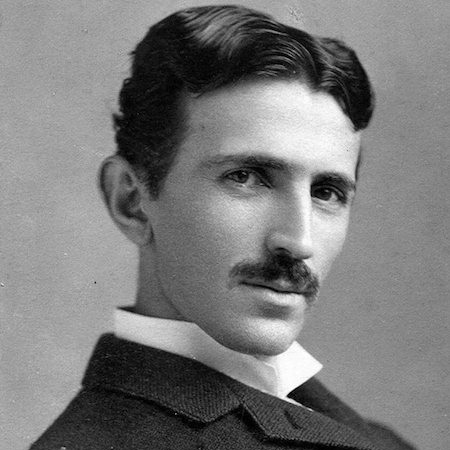

User Profile

physicist / inventor
Nukola Tesla
Tesla gained practical experience in the early 1880s working in telephony and at Continental Edison in the new electric power industry. He worked for a short time at the Edison Machine Works in New York City before he struck out on his own. Tesla set up laboratories and companies in New York to develop a range of electrical and mechanical devices. His alternating current (AC) induction motor and related polyphase AC patents.